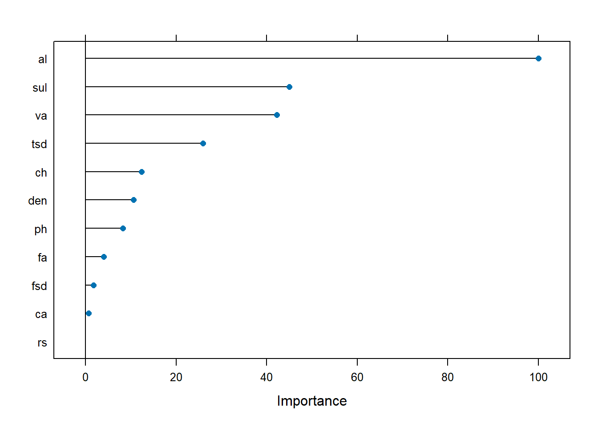
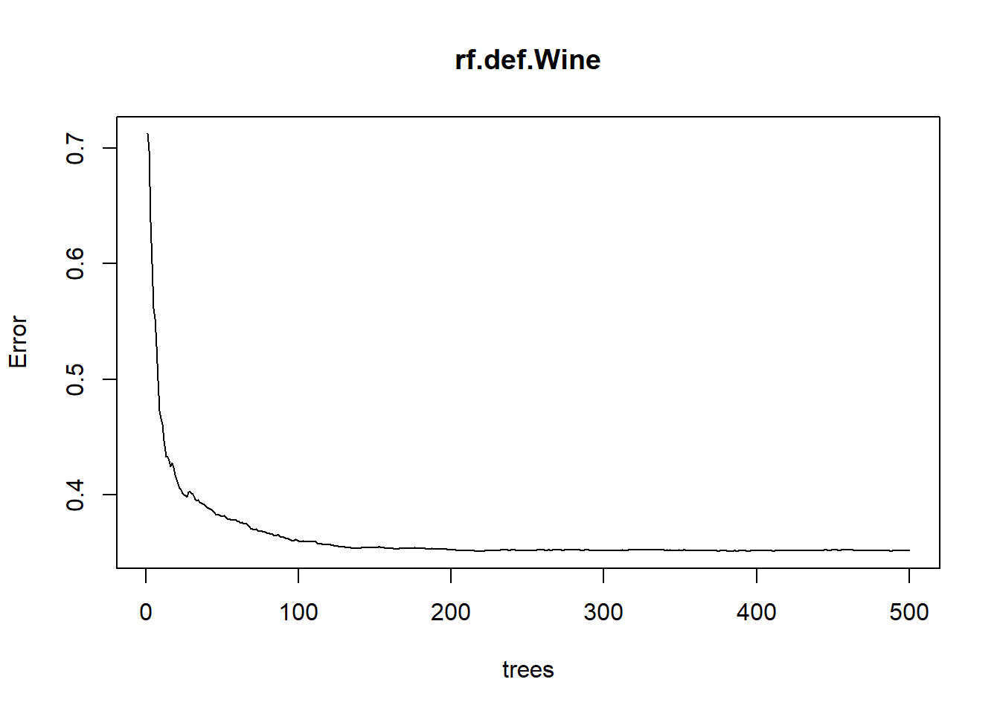
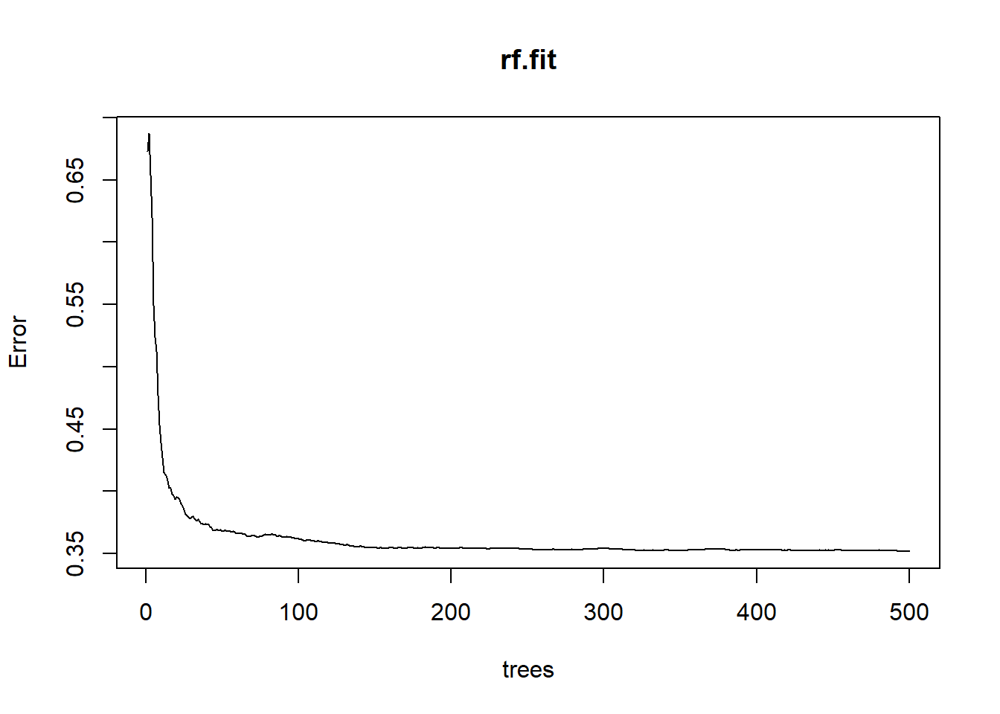
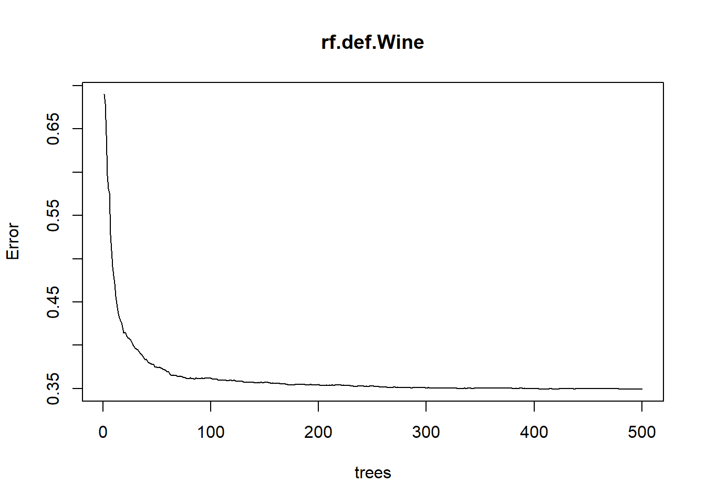

6 Workflow Demonstration
In this section, we use a wine dataset to exemplify a typical workflow for constructing ML models. R code is included and several ML models are constructed. The dataset can be found here.
knitr::opts_chunk$set(echo = TRUE, eval = TRUE, cache = TRUE, warning = FALSE, message = FALSE)
library(tree)## Warning: package 'tree' was built under R version 4.2.3## Warning: package 'caret' was built under R version 4.2.3## Loading required package: lattice## Warning: package 'lattice' was built under R version 4.2.3##
## Attaching package: 'caret'## The following object is masked from 'package:purrr':
##
## lift## Warning: package 'rattle' was built under R version 4.2.3## Loading required package: bitops## Rattle: A free graphical interface for data science with R.
## Version 5.5.1 Copyright (c) 2006-2021 Togaware Pty Ltd.
## Type 'rattle()' to shake, rattle, and roll your data.## randomForest 4.7-1.1## Type rfNews() to see new features/changes/bug fixes.##
## Attaching package: 'randomForest'## The following object is masked from 'package:rattle':
##
## importance## The following object is masked from 'package:dplyr':
##
## combine## The following object is masked from 'package:ggplot2':
##
## margin
wine <- read_delim("winequality-red.csv", delim = ';')
# shorten variable names
fa <- wine$`fixed acidity`
va <- as.numeric(wine$`volatile acidity`)
ca <- as.numeric(wine$`citric acid`)
rs <- wine$`residual sugar`
ch <- as.numeric(wine$chlorides)
fsd <- wine$`free sulfur dioxide`
tsd <- wine$`total sulfur dioxide`
den <- as.numeric(wine$density)
ph <- wine$pH
sul <- as.numeric(wine$sulphates)
al <- wine$alcohol
qual <- wine$quality
winez <- data.frame(fa, va, ca, rs, ch, fsd, tsd, den, ph, sul, al, qual)
# collapse qual into 2 labels
winez$qual2 <- as.factor(ifelse(winez$qual < 6, "low", "high"))
# collapse qual into 3 labels
winez$qual3 <- as.factor(ifelse(winez$qual < 5, "L", ifelse(winez$qual < 7, "M", "H")))
table(qual)## qual
## 3 4 5 6 7 8
## 10 53 681 638 199 18
table(winez$qual2)##
## high low
## 855 744
table(winez$qual3)##
## H L M
## 217 63 1319
# separate data into a training set and a test set
set.seed(2)
train <- sample(nrow(winez), nrow(winez)*.8)
winez_train <- winez[train,]
winez_test <- winez[-train,]
# random forest
rfGrid <- expand.grid(mtry = 2:8)
# 2-level variable
rf_tree2 <- train(qual2 ~ fa + va + ca + rs + ch + fsd + tsd + den + ph + sul + al, data = winez_train, method = "rf", preProcess = c("center", "scale"), trControl = trainControl(method = "cv", number = 10), tuneGrid = rfGrid)
rf2_pred <- predict(rf_tree2, newdata = winez_test)
rfMatrix2 <- table(rf2_pred, winez_test$qual2)
rf2_test <- mean(rf2_pred == winez_test$qual2)
plot(varImp(rf_tree2))
confusionMatrix(rf2_pred, winez_test$qual2)## Confusion Matrix and Statistics
##
## Reference
## Prediction high low
## high 138 25
## low 45 112
##
## Accuracy : 0.7812
## 95% CI : (0.7319, 0.8253)
## No Information Rate : 0.5719
## P-Value [Acc > NIR] : 2.968e-15
##
## Kappa : 0.5613
##
## Mcnemar's Test P-Value : 0.02315
##
## Sensitivity : 0.7541
## Specificity : 0.8175
## Pos Pred Value : 0.8466
## Neg Pred Value : 0.7134
## Prevalence : 0.5719
## Detection Rate : 0.4313
## Detection Prevalence : 0.5094
## Balanced Accuracy : 0.7858
##
## 'Positive' Class : high
##
# 3-level variable
rf_tree3 <- train(qual3 ~ fa + va + ca + rs + ch + fsd + tsd + den + ph + sul + al, data = winez_train, method = "rf", preProcess = c("center", "scale"), trControl = trainControl(method = "cv", number = 10), tuneGrid = rfGrid)
rf3_pred <- predict(rf_tree3, newdata = winez_test)
rfMatrix3 <- table(rf3_pred, winez_test$qual3)
rf3_test <- mean(rf3_pred == winez_test$qual3)
plot(varImp(rf_tree3))
confusionMatrix(rf3_pred, winez_test$qual3)## Confusion Matrix and Statistics
##
## Reference
## Prediction H L M
## H 25 0 5
## L 0 0 1
## M 18 8 263
##
## Overall Statistics
##
## Accuracy : 0.9
## 95% CI : (0.8618, 0.9306)
## No Information Rate : 0.8406
## P-Value [Acc > NIR] : 0.001473
##
## Kappa : 0.5617
##
## Mcnemar's Test P-Value : NA
##
## Statistics by Class:
##
## Class: H Class: L Class: M
## Sensitivity 0.58140 0.000000 0.9777
## Specificity 0.98195 0.996795 0.4902
## Pos Pred Value 0.83333 0.000000 0.9100
## Neg Pred Value 0.93793 0.974922 0.8065
## Prevalence 0.13437 0.025000 0.8406
## Detection Rate 0.07812 0.000000 0.8219
## Detection Prevalence 0.09375 0.003125 0.9031
## Balanced Accuracy 0.78167 0.498397 0.7339
# random forest plot: accuracy rates vs number of predictors
rfplot1 <- plot(rf_tree2)
rfplot2 <- plot(rf_tree3)
gridExtra::grid.arrange(rfplot1, rfplot2, nrow = 1, ncol = 2)
Figure 6.1: Accuracy Rates vs Number of Predictors Used for 2-level Variable (left) and 3-level Variable (right)
# randomforests, mtry = sqrt(11)
rf.def.Wine <- randomForest(qual ~ fa + va + ca + rs + ch + fsd + tsd + den + ph + sul + al, data = winez_train, importance = TRUE)
yhat.rf.Wine <- predict(rf.def.Wine, newdata = winez_test)
rf.mtry3.testMSE <- mean((yhat.rf.Wine - winez_test$qual)^2)
plot(rf.def.Wine)
print(rf.mtry3.testMSE)## [1] 0.289515
# mtry = 4
rf.fit <- randomForest(qual ~ fa + va + ca + rs + ch + fsd + tsd + den + ph + sul + al, data = winez_train, mtry = 4, importance = TRUE)
rf.pred <- predict(rf.fit, newdata = winez_test)
rf.mtry4.testMSE <- mean((rf.pred - winez_test$qual)^2)
plot(rf.fit)
print(rf.mtry4.testMSE)## [1] 0.2907887
# mtry = 7
rf.def.Wine <- randomForest(qual ~ fa + va + ca + rs + ch + fsd + tsd + den + ph + sul + al, data = winez_train, mtry = 7, importance = TRUE)
yhat.rf.Wine <- predict(rf.def.Wine, newdata = winez_test)
rf.mtry7.testMSE <- mean((yhat.rf.Wine - winez_test$qual)^2)
plot(rf.def.Wine)
print(rf.mtry7.testMSE)## [1] 0.292777